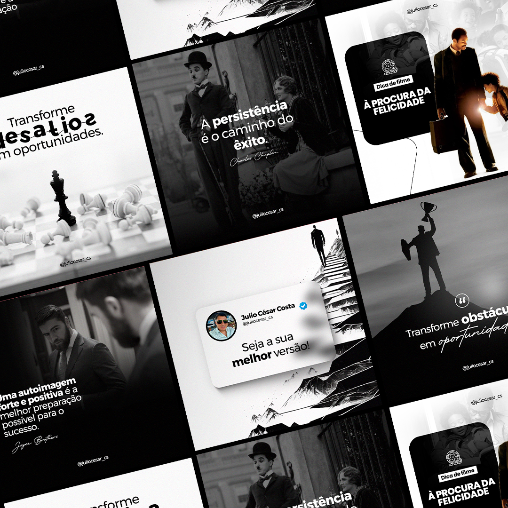
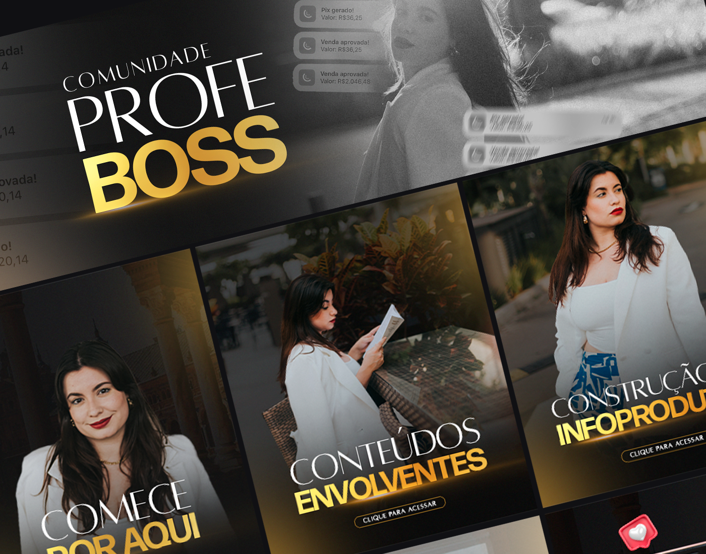
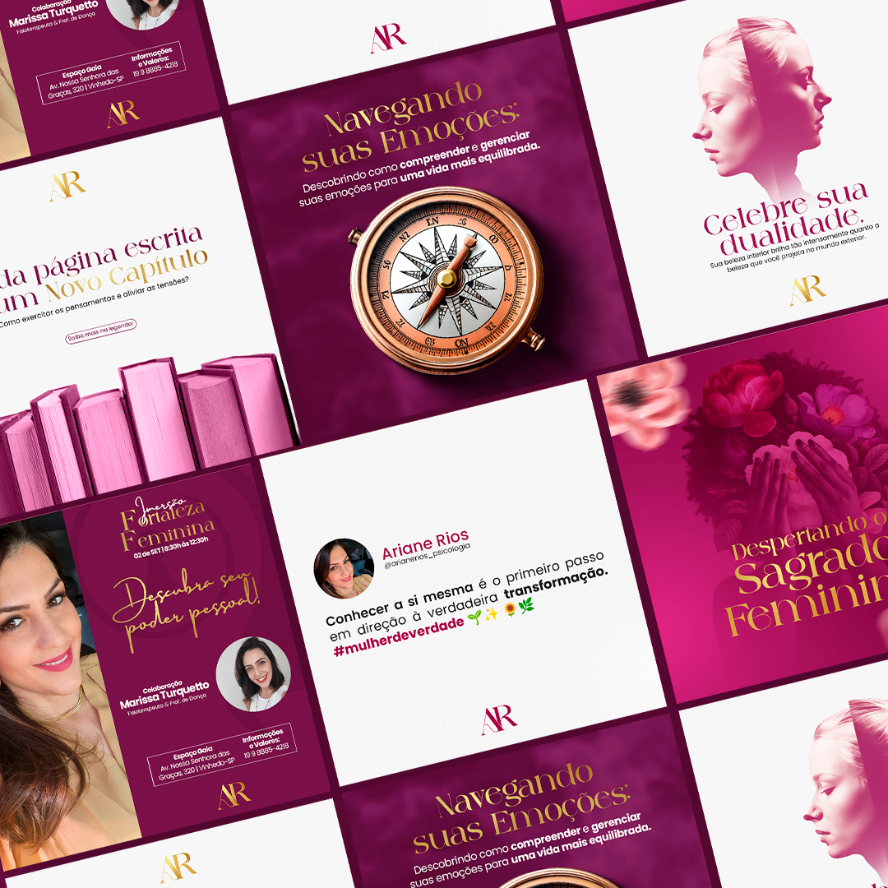

Engenharia de Software
Centro Universitário Internacional Uninter
Graduação em andamentoDesigner Gráfico • Estudante de Engenharia de Software
Crio soluções visuais há mais de 10 anos e, atualmente, estou em transição para a área de tecnologia, unindo criatividade, design e programação.
Meu nome é Kamylla, atualmente sou designer gráfico e trabalho há mais de 10 anos na área. Apesar da minha experiência com criação visual, meu desejo é migrar e me inserir na área de tecnologia.
Sempre tive interesse por tecnologia, mas durante muito tempo não me propus a fazer essa mudança de forma concreta. No ano passado, resolvi me dedicar a esse objetivo e comecei a cursar Engenharia de Software.
Ainda não defini exatamente qual caminho seguir dentro da tecnologia, pois existem muitas possibilidades. Por isso, estou conhecendo diferentes áreas ao longo da graduação para tomar essa decisão de forma mais consciente.
No meu tempo livre, gosto de ler. A leitura é um hobby que me ajuda a ampliar minha visão, aprender novos assuntos e desenvolver minha criatividade.
Centro Universitário Internacional Uninter
Graduação em andamentoEnsino médio completo
Formação básica concluídaMais de 10 anos de atuação como designer gráfico.
Design, comunicação visual e criação digitalMeu portfólio reúne projetos visuais desenvolvidos ao longo da minha trajetória como designer gráfico. Nele, apresento trabalhos relacionados à criação de peças digitais, identidade visual, comunicação para redes sociais e outros materiais gráficos.
Este espaço representa minha experiência criativa e também minha base profissional para a transição para a tecnologia.

Projeto de design gráfico

Peça visual para redes sociais

Identidade visual ou material gráfico
Preencha o formulário abaixo para simular o envio de uma mensagem.
E-mail: Kamyllafreitas.oliveira@gmail.com